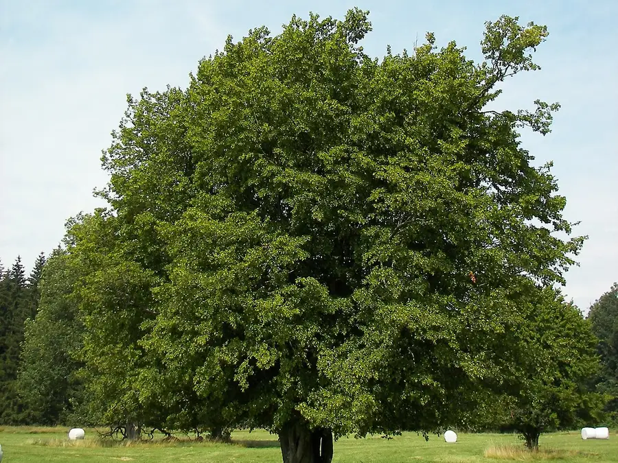
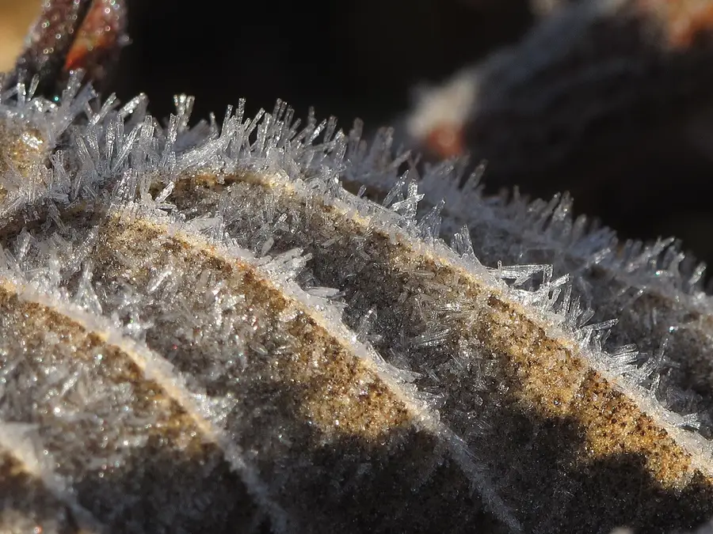

Hornbeam
Carpinus betulus · Betulaceae (birch family)
Also called ironwood, yoke elm.
- Height
- Up to 30 m
- Lifespan
- 150–300 years; pollards much longer
- Status
- Native to south-east England; planted widely
- Where
- Heavy clay woodland, ancient pollards, hedges, formal avenues
- Note
- The hardest, heaviest timber of any British tree
The trunk is the tell: fluted and sinewy, like twisted rope or a flexed muscle, with smooth pale grey bark marked by fine vertical silvery streaks. Once you have seen it you cannot mistake it for beech.
Leaves look like beech at a glance but are clearly and regularly toothed all round, with 10–13 pairs of deeply impressed parallel veins that make the leaf look pleated.
Fruit is unlike anything else: small nuts each held at the base of a three-lobed papery green wing, hanging in loose clusters that catch the light and spin as they fall.
Buds are slender, pointed and pressed close against the twig — a subtle but reliable contrast with beech, whose long buds stick out at an angle.
Ancient hornbeam pollards, cut repeatedly at head height for firewood and charcoal, are a speciality of Epping and Hatfield forests; they look like squat, bulbous, many-headed monsters and are centuries old.
Hornbeam hedges, like beech, hold dead brown leaves through winter — check the toothed edge and fluted stems to tell which you are looking at.
Through the year
Spring
Fresh pleated leaves in April, with drooping yellow-green catkins.
Summer
Dense shade; the winged fruit clusters develop and hang conspicuously.
Autumn
Clear yellow to orange, holding late; papery wings spin down through the wood.
Winter
Fluted grey trunks are at their most sculptural, and clipped hornbeam keeps a screen of brown leaves.
One to tell: Hornbeam is the hardest wood in Britain — it was used for mill cogs before metal was cheap.